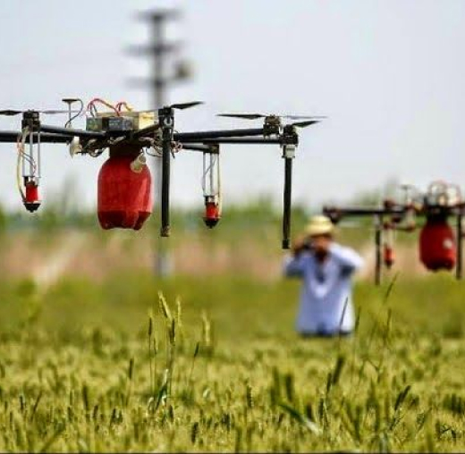

About PLANT
PLANT (acronym for Promoting Learning in Agribusiness using New Technologies) is a 3-year UK (DFID) funded programme (implemented by TechnoServe, in collaboration with the British Council) designed to increase the adoption of technology for improved agricultural productivity and efficiency.
Agriculture & Technology in Nigeria
The Nigerian Agricultural Sector requires interventions
The agriculture sector is characterised by limited investment, low productivity, high post-harvest losses, waste, and lost value along the value chains. In practical terms crop yields and livestock growth and productivity are low.
Technology holds a huge potential to transform the Agricultural Landscape
The current landscape of the agricultural sector may seem like a bleak picture, but for the first time, recent innovations in technology combined with easier access to investment and financing, and new business modeling approaches, hold real potential to bypass many of the constraints in agribusiness at a truly transformation scale.
The PLANT Programme is enabling the discovery and adoption of technology solutions that address real agribusiness constraints at the right cost to agribusinesses and at the appropriate sophistication level.
Increase the pipeline of demand driven, transformative, monetizable and viable agricultural technology solutions.
Raise awareness and increase adoption of available agtech solutions by agribusiness and farmers.
Foster an agribusiness, technology and innovation ecosystem that continues to generate and scale transformative technological innovations in agriculture.
The PLANT programme is an important part of a wider portfolio approach to agricultural and technological innovation that is aimed at increasing income and creating jobs for the poor alongside other DFID Nigeria Programmes.
Incubator/Accelerator Support
Providing advisory services to help incubators and accelerators improve their offerings to tech entrepreneurs interested in the agriculture sector.
AgTech Entrepreneurs Incubation
Providing business incubation support to intending and existing agtech entrepreneurs to enable them identify, develop and launch market driven, investor ready Agricultural Technology Solutions.
Agribusiness Capacity Building Sessions
Providing business incubation support to intending and existing agtech entrepreneurs to enable them identify, develop and launch market driven, investor ready Agricultural Technology Solutions.
Team Members
The PLANT Programme is driven by a dynamic team of experts individuals committed to increasing the adoption of technology in agriculture.